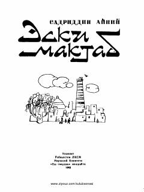

EMInqilobdan oldingi eski maktablar hayoti va o'qitish usullari haqidagi ta'sirli qissa.
Ushbu qissada muallif inqilobdan avvalgi eski maktablardagi o'qitish usullari, bolalarning og'ir turmush sharoiti va achinarli bolalik davrini mahorat bilan tasvirlab bergan. Asar o'sha davr ta'lim tizimi va muhitining tanqidiy manzarasini ochib beradi.